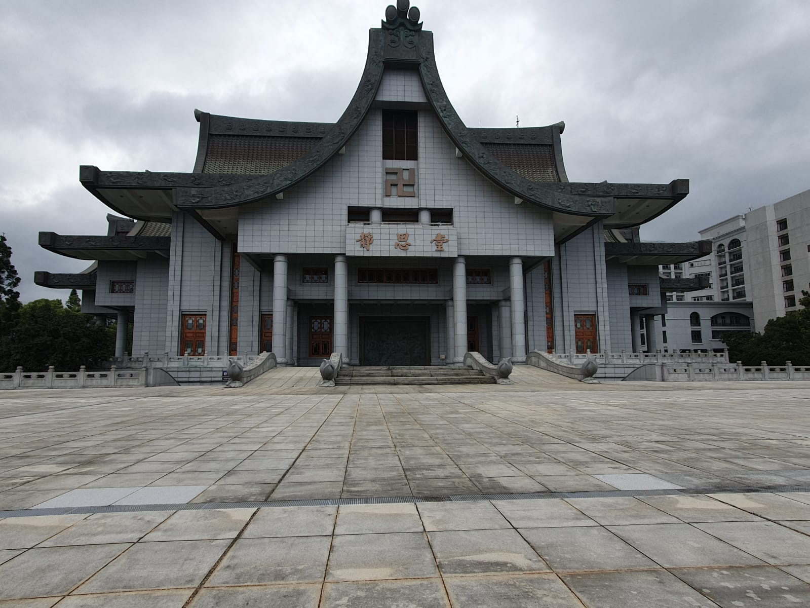

Di Taipei, kami mengunjungi Gereja Holy Family Catholic Church untuk mengikuti misa dengan bahasa Inggris. Para petugas misa terutama Romo yang memimpin misa dengan sangat lancar dan menginspirasi. Para umat juga menerima kami dengan ramah.
Kami melihat kaca berwarna-warni dari dalam gereja dan gambar keluarga kudus Nazaret di altar. Selain dari dalam, dari luar gedung kita bisa melihat motif pada dinding luar. Selain itu, bentuk gedung yang berupa segi 5 tak sama tapi simetris memiliki fitur estesis yang bagus.
Gereja ini dibangun tahun 1953 dan berumur 72 tahun. Pada tahun 90-an, gereja ini pernah dipindahkan. Gereja Holy Family Catholic Church juga memiliki harapan untuk para umatnya supaya bisa membangun keluarga seperti keluarga kudus Nazaret.
| Santo Laurensius | Holy Family Church |
|---|---|
| 2 lantai | 1 lantai |
| Bentuk seperti istana | Bentuk segi 5 |
| Altar yang polos | Altar bergambar keluarga kudus Nazaret |
| Gua Maria berbentuk gua | Gua Maria yang tinggi |

Di Hualien, kami mengunjungi mengikuti Comunity Service di Tzu Chi Resource Center untuk memilah sampah demi masa depan bumi yang lebih baik. Kami merasa senang dan melakukan hal yang menyenangkan. Kami menjadi pahlawan yang secara sukarela menjaga bumi dari sampah. Seperti yang diajarkan oleh tuhan, kita harus merawat bumi dan menyayangi sesama.
Tujuan ini tercapai, karena sampah yang dipisah akan didaur ulang dan memmbantu perputaran sampah. Orang-orang yang berada di Tzu Chi juga merasa terbantu ooleh kami.
Melawan rasa malas dan mementingkan kepentingan bersama sebelum keinginan diri karena cinta pada bumi.
Kami melawan kemalasan dan lebih mencintai bumi demi kepentingan bersama; merawat bumi.
Yesus mencontohkan untuk selalu mementingkan kepentingan bersama dan mencintai sesama.
